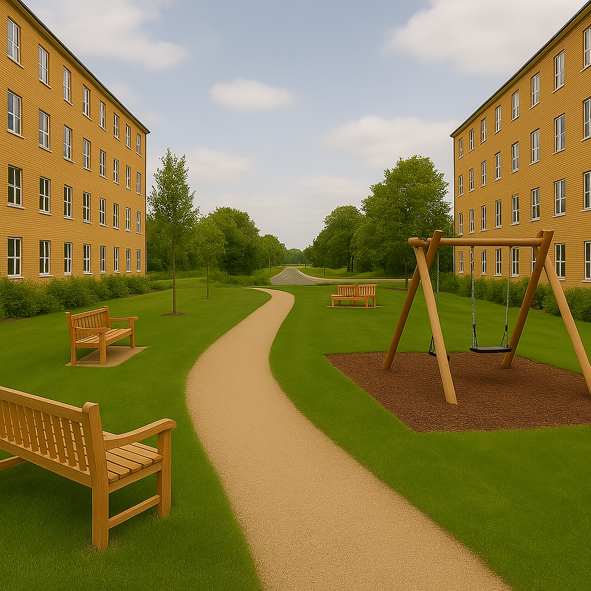

Combined Lounge and Kitchen

This space combines a modern kitchen and cozy lounge area for students to cook, dine, and socialize with eachother. Air conditioning and free Wi-Fi are provided to cater for basic needs as a student.
This shared bathroom is regularly cleaned and well-maintained by the accomodation staff. Equipped with modern fittings and ample space, it’s designed to provide a comfortable experience for students to maintain proper hygiene with ease.
This space combines a modern kitchen and cozy lounge area for students to cook, dine, and socialize with eachother. Air conditioning and free Wi-Fi are provided to cater for basic needs as a student.
Enjoy peaceful study sessions or leisure time in our community garden with benches for relaxation. A perfect place for group discussions and Yoga.
The walking track offers a scenic path leading to the main road, surrounded by greenery. Benches and swings along the way offer relaxation and encourage daily walks for wellness of the students.